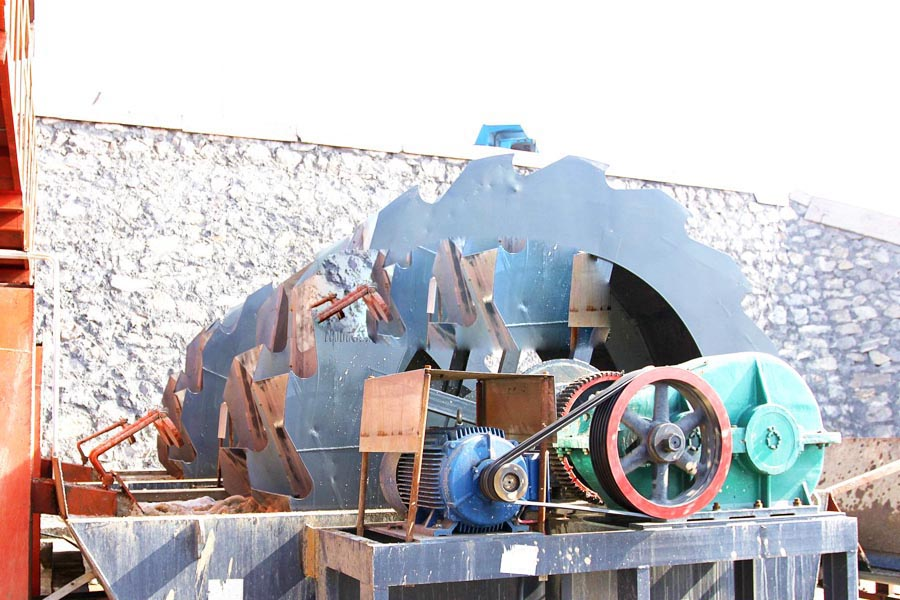

Construction waste crushing production line

Mobile construction waste crushing station for urban construction waste crushing.
Silica Sand Washing Plant
Sand washing machine, bucket wheel sand washing machine, spiral sand washing machine, sand washing machine, sand washing equipment, sand washing machine, CAG is a professional supplier of bucket wheel sand washing machine, spiral sand washing machine, sand washing machine, sand washing machine and other sand washing equipment.
Sand washing machine manufacturers, sand washing machine equipment, bucket wheel sand washing machine, CAG mainly the production of sand washing machine, sand washing machine manufacturers, sand washing machine equipment, bucket wheel sand washing machine, a variety of models, on-demand design ! professional trustworthy, products worth test.

The entire river sand production line involves river sand crushing, washing and screening equipment. And the main crushing machine accustomed to produce river sand are: jaw crusher, cone crusher and VSI crusher, vibrating screen, vibrating feeder, belt conveyor and sand washing machine. River sand crushing & screening plant is popular in Malaysia, India, Guyana, Nigeria, etc.
River Sand Stone River sand stones are mainly river red stones or materials, for example river gravels, boulders, cobbles, and river sands. These river mixed aggregates are mined, and then transported towards the stone quarry for crushing. In rive sand quarry, river stones are crushed by rock crusher machine into small dust, general you will find four types of crushed river aggregates screened from vibrating screen: Coarse sand: 0.6 mm – 2 mm,Fine gravel: 2 mm – 6 mm, Medium gravel: 6-20 mm, Coarse gravel: 20-60 mm. River sand production lines are the major crushing plant , washing plant and screening plant to process top quality aggregate sand replacement for river sand, the most widely used raw material is quartzite, or quartz sand.
River stone crushing washing & screening plant River sand stone washing and screening plant is the major crushing unit to process river stones like cobble rocks, pebble, sand & gravel, silica etc. It calls for crushing, screening and washing process. According to the application, we design the proved river stone crushing & screening plant of 40-80 TPH, 80-120 TPH, 120- 200TPH, 200-300TPH, 300-450TPH, 450-600TPH, 600-800TPH, 800-1000 TPH etc. for the contractors and clients. River sand stone crushing system includes stationary and mobile crushing unit, producing aggregates and artifical sands substitute of river sand for road building construction.
Sand washing sand equipment industrial milling equipment broken equipment mineral processing equipment auxiliary equipment bucket spiral sand washing machine sand washing machine efficient fine crusher vertical shaft impact crusher sand washing machine working Wheel meal (product size 0-3 mm)
CAG specializing in the production of various types of sand washing machine, spiral sand washing machine, wheel sand washing machine, stone washing machine, sand washing vibrating screen for sand stones factory, mining, metallurgy, building materials industries to provide various types of sand washing machine equipment.
Leave Me A Message, Now
If you have any questions regarding equipment prices, production line configuration or other problems, you can send a message to us, we will contact you soon.